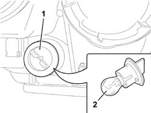
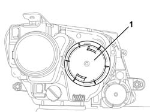
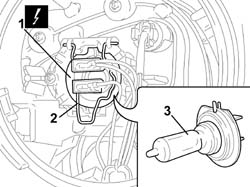

5540B46 LAMPADA ONE MAIN BEAM OR TURN SIGNAL LH OR RH OF ONE GAS DISCHARGE LIGHTING UNIT R R
- Path
- Procedures > 55 ELECTRICAL EQUIPMENT > 5540 EXTERIOR LIGHTING > 5540B HEADLAMPS > 5540B46 LAMPADA ONE MAIN BEAM OR TURN SIGNAL LH OR RH OF ONE GAS DISCHARGE LIGHTING UNIT R R
- Kind
- repair procedure (removal / refitting; the operation number is the code)
- Applies to
- all engines; all production periods
- Interactive page
- https://sloeber94.github.io/elrnDB-fUlss/en/#/179007579
Applies to: all engines; all production periods
 Removing
Removing
 Refitting
Refitting- To remove the direction indicator, proceed as described below.
Op. 5530B56 BATTERY DRIP TRAY COVER - R.R.
- Disconnect the negative battery terminal.
1. Rotate the bulb holder in an anti-clockwise direction and extract it.
2. Extract the bulb pushing it gently and turning it in an anti-clockwise direction.

Applies to: all engines; all production periods
- To remove the main beam headlamp, proceed as described below.
Op. 5530B56 BATTERY DRIP TRAY COVER - R.R.
- Disconnect the negative battery terminal.
1. Remove the cover turning it in an anti-clockwise direction.

Applies to: all engines; all production periods
1. Disconnect the electrical connection.
2. Release the retaining spring.
3. Extract the bulb.

Applies to: all engines; all production periods
Refitting
Removing- To refit the main beam headlamp, proceed as described below.
- Position the bulb.
- Attach the retaining spring.
- Connect the electrical connection.
- Position the cover turning it in an anti-clockwise direction.
- Connect the negative battery terminal.
Op. 5530B56 BATTERY DRIP TRAY COVER - R.R.
- To refit the direction indicator, proceed as described below.
- Position the bulb pushing it gently and turning it in a clockwise direction.
- Fit the bulb holder, turning it in a clockwise direaction and making sure that it is correctly secured.
- Connect the negative battery terminal.